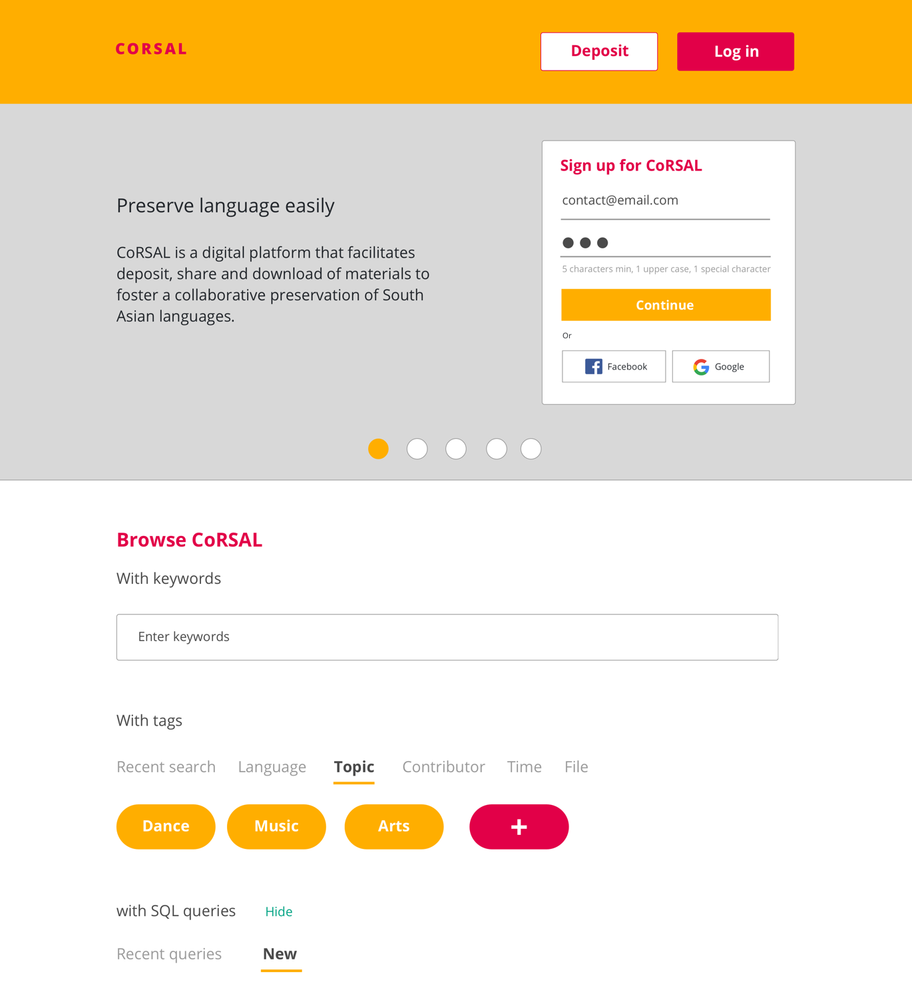
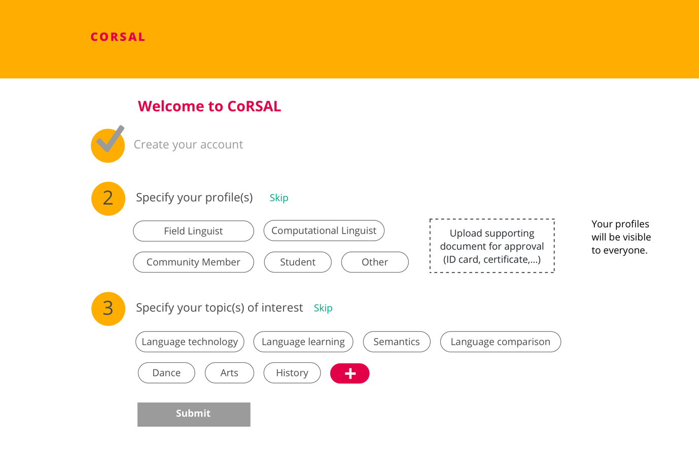
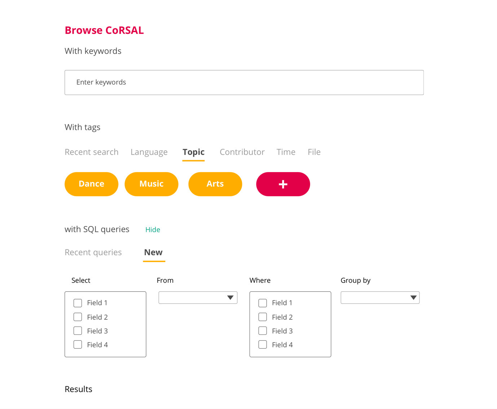
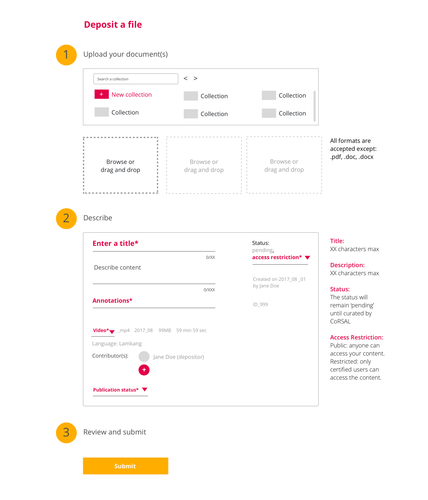
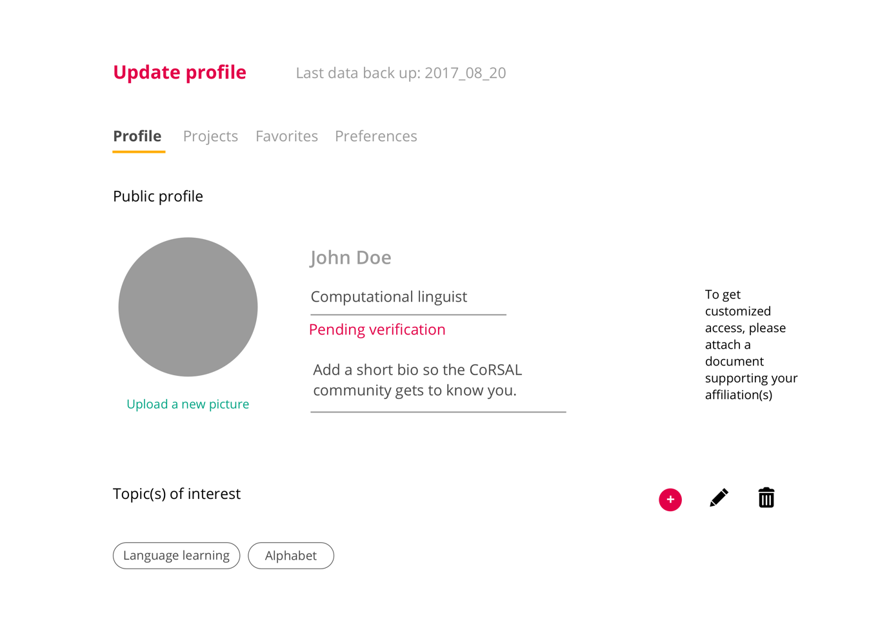

Preserving languages is at stake with globalization. In fact, native languages gradually become endangered as its community members increasingly speak English as a primary language. To overcome this situation, the elder generations strive to instill the language into the community. However, the task remains a struggle.
The department of linguistics of the University of North Texas partnered with the IIT Institute of Design to help preserve endangered languages, focusing on South Asia area. They worked on a digital archives concept for the community members along with professional linguists.
By going through the previous team’s research, we garnered three major insights: The project aims at tackling multiple issues at once and target too many stakeholders. The first version of the concept was confusing due to opaque directions and priorities. The available information for the computational linguists, archives manager, and community members didn’t allow to fully understand their needs.
After presenting our findings to the client, we agreed to first focus on the primary users, namely the field linguists, while collecting more information about the other stakeholders’ needs.
Based on our research insights, we defined common functionalities for both app and website, prioritized them and created a userflow upon it. We split into two others teams to work on each platform. I created wireframes for the website, focusing on platform engagement and content entry.
LANDING PAGE: HAVING A GLIMPSE OF THE PRODUCT
SIGN UP: MINIMIZING AND SIMPLIFYING THE STEPS
SEARCH: BALACING FAST AND SPECIFIC SEARCH
DEPOSITING: FACILITATING CONTENT MANAGEMENT
DASHBOARD: NAVIGATING SMOOTHLY BETWEEN THE SETTINGS
I was additionally leading the process, creating the branding and a design visual language. I strive to ensure that both platforms were consistent in terms of style, content and flow.
Navigating ambiguity was a major learning. In fact, priorities still needed some consensus and schedule didn't allow opportunities for stakeholder interviews to happen.